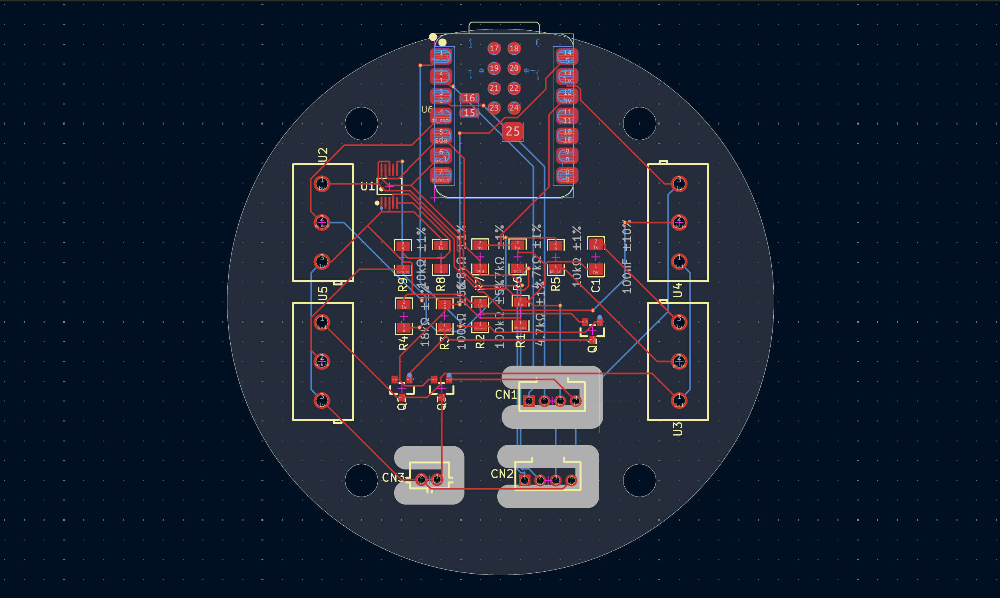

Modular open
source agriculture
GROUU is precision agriculture and automation for personal and small-scale growers — a kit of open sensor nodes, actuators, and an edge server, each documented so you can build, deploy and adapt it yourself. Developed as a PhD research-through-design process.
Agriculture, at the scale of a person
GROUU enables precision agriculture and automation for personal or small-scale growing — not industrial farms, but gardens, plots, greenhouses. Its development is integrated in a long-lasting personal research-through-design process.
The project is deliberately modular: sensor nodes, actuator modules, and a local edge server are designed as independent, mix-and-match templates. Scale and context dictate how many of each you use — there is no fixed system to buy into.
As a situated research practice, the repository records the personal development and learning behind the work, and treats every exploration, at any scale, as a valid data generator.
From soil to dashboard
Nodes sense and act in the field.
WiFi nodes report over local MQTT; LoRaWAN nodes reach the same server via The Things Network — two parallel tracks, one shared stack on a Raspberry Pi.
MQTT broker — messaging between nodes and the server.
Flow-based logic — process and route farm data.
Time-series store for all sensor history.
Dashboards to visualise everything, live.
DiY templates
GROUU V2 · in development
WiFi Sensor Node
A wireless sensor template reporting over WiFi + MQTT — for sites within reach of a network.

LoRa Sensor Node
Long-range, low-power template for remote fields and wells beyond WiFi coverage.
Actuator Module
Drives valves and pumps — e.g. a 1-in / 4-out electrovalve water router for micro-irrigation.

Edge Server
A Raspberry Pi running the GROUU Stack — the local hub that ingests, stores, and visualises all node data.
Nodes & modules
Open node and server designs at different stages — developed, under development, or planned. Each links to its documentation.
WellBouy — Water-Quality Sensor
An open LoRaWAN reference design for a water source — DS18B20 temperature, TDS, turbidity (SEN0189) and pH (Phidgets), joining The Things Network over EU868. All four sensors are calibrated and validated; the node deep-sleeps, resumes its session and accepts downlink commands, streaming to a live dashboard. Dedicated PCB fabricated.

WiFi Sensor Node
A reusable ESP32 + DHT22 template publishing JSON over WiFi & MQTT, with reconnect logic and over-the-air updates. Complete, documented firmware.
Aquaponics
A home aquaponics unit for aromatics, built around a recovered fish tank with a CNC-milled structure.
GROUUWAN
The long-range LoRaWAN track via The Things Network — gateway pattern and TTN bridge documented, first node tested, sensor firmware in progress.

Greenhouse · V0 (GrouuPro)
GrouuPro, ~2013 — a built greenhouse + fertigation cabinet: Arduino Yún + Uno probes publishing to Google Sheets via Temboo, with local pump & vent actuation. The origin of GROUU's architecture.
Edge Server
The open containerised GROUU Stack — Mosquitto, Node-RED, InfluxDB and Grafana — deployable on any Linux host or Raspberry Pi.
Research-through-design process evolution
A built greenhouse with a fertigation cabinet — Arduino Yún + Uno probes publishing to Google Sheets via Temboo, driving pumps and vent locally. The first sense→publish→visualise system, and the root of everything since.
The monolith broken into independent, interconnectable nodes. Node-RED logic, Fusion 360 CAD, and custom PCBs — the Soil Probe REV0 among them.

The designer's own position inside an open knowledge ecosystem — WiFi and LoRaWAN nodes feeding a containerised server stack, tested across real, inhabited sites.
Build on it
GROUU is open hardware and open software — every node, module and the server stack is documented to be rebuilt and adapted. Fork it, deploy it in your own context, and get in touch if you'd like to collaborate.